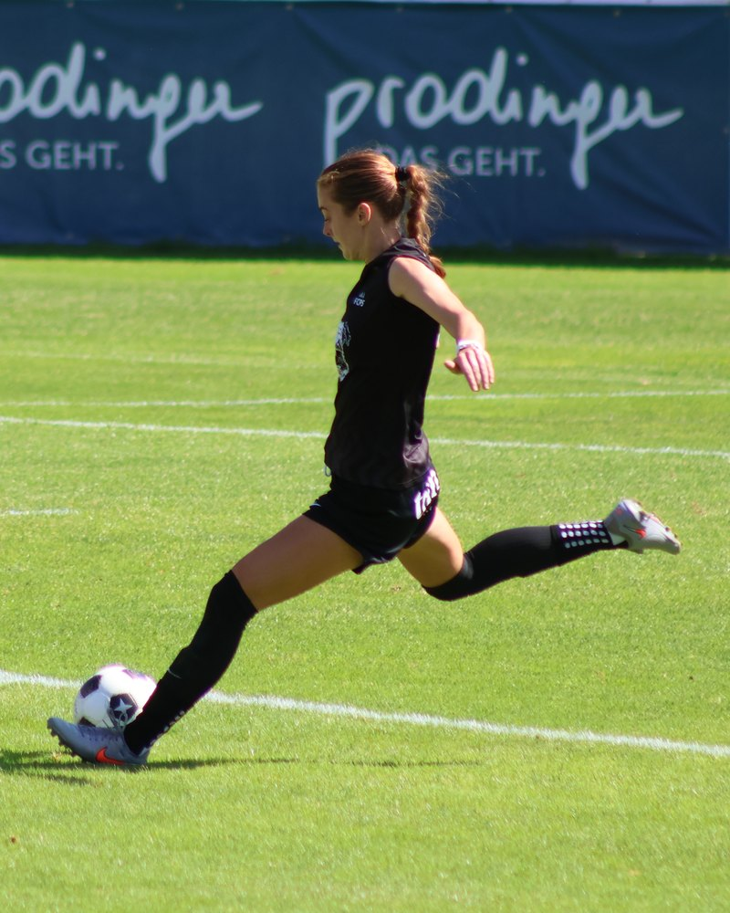
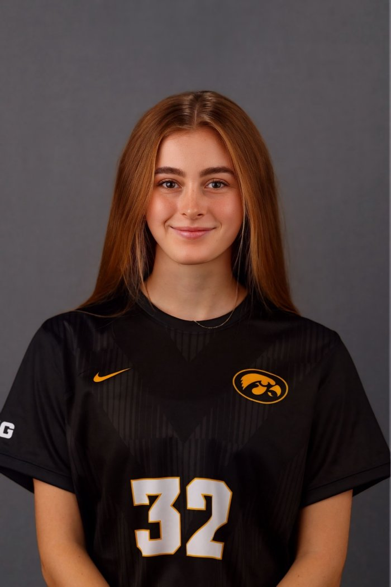
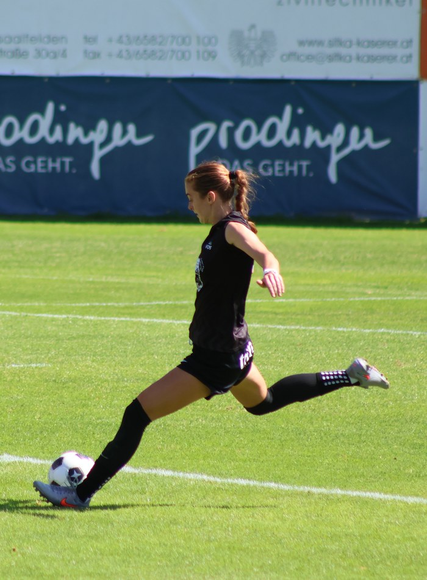
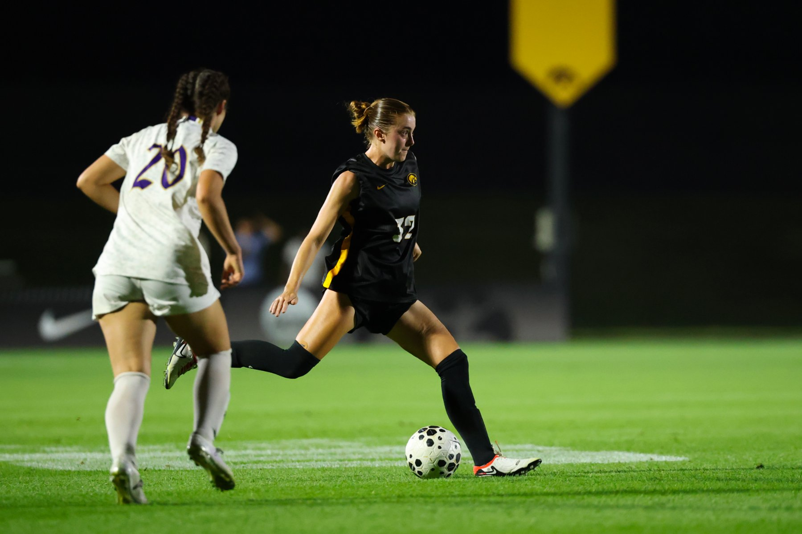
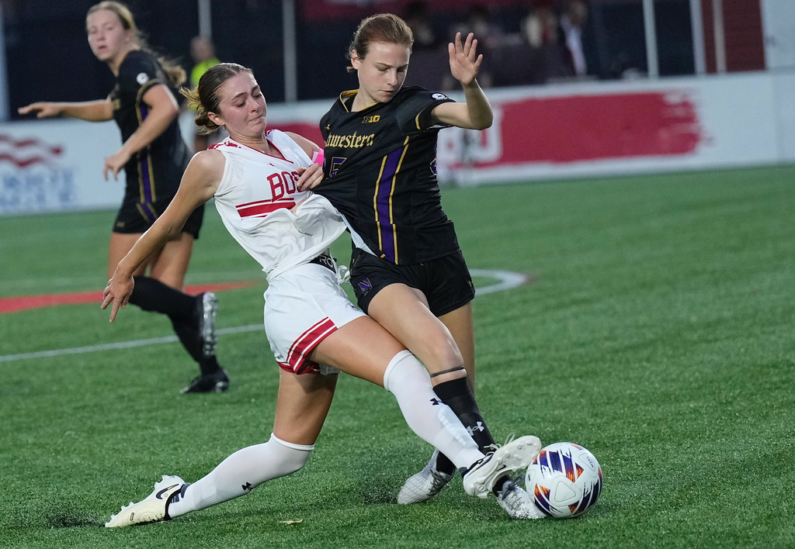
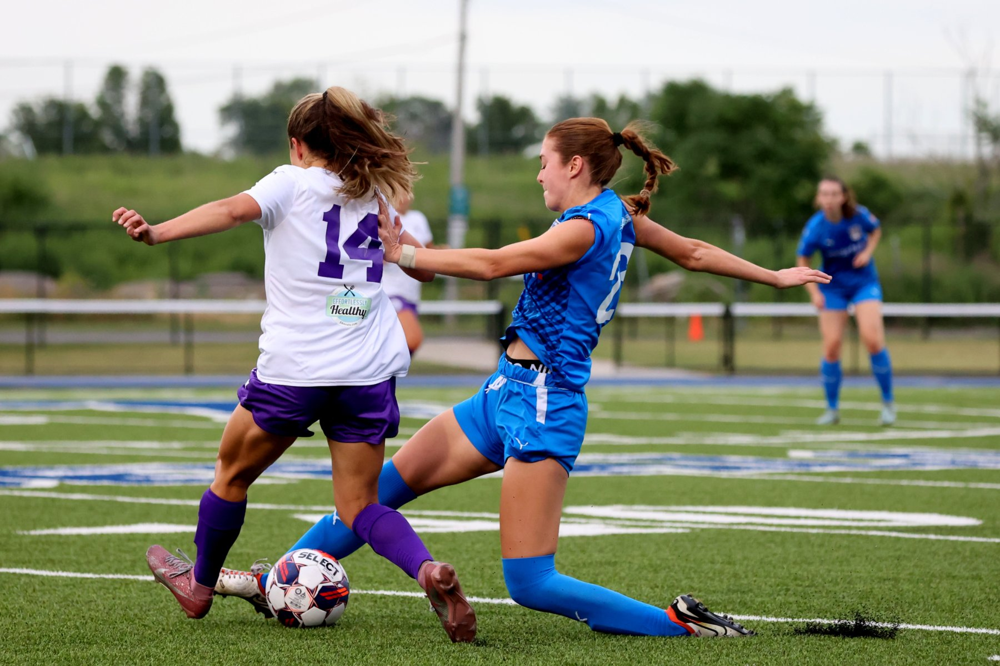
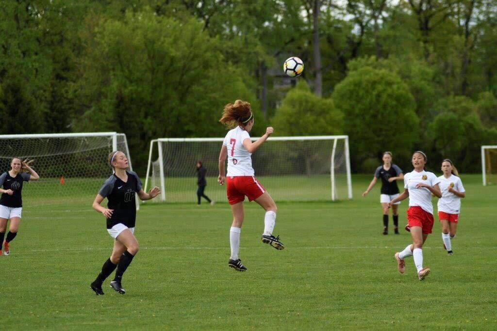

Defensive Midfielder / Center-Back

Iowa Hawkeyes Women's Soccer | Defensive Midfielder

Boston University Women's Soccer | Team Captain

United Women's Soccer & USL W League

Elite Clubs National League (ECNL) | Team Captain

2026 season with FC Pinzgau Saalfelden in the 2. Frauen-Bundesliga, and the 2025 NCAA Division I season with Iowa. Source and season are marked on every stat.